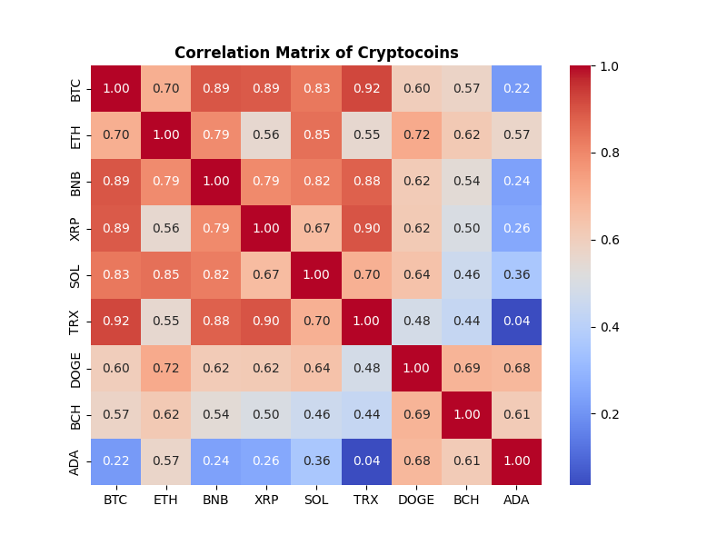
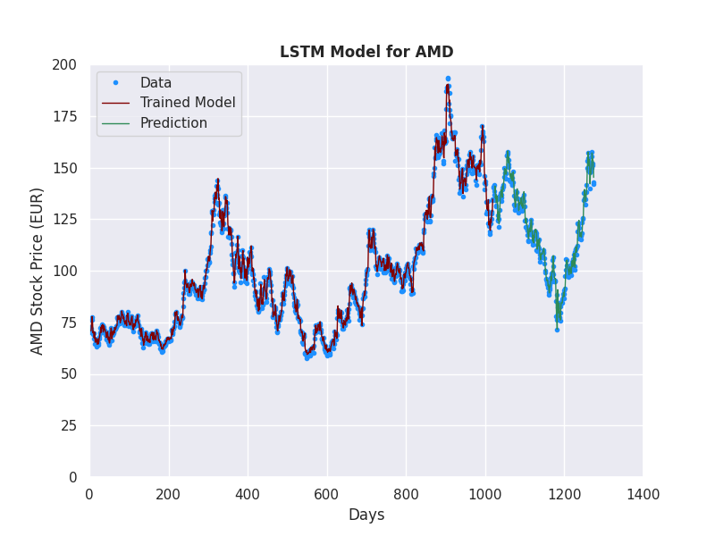
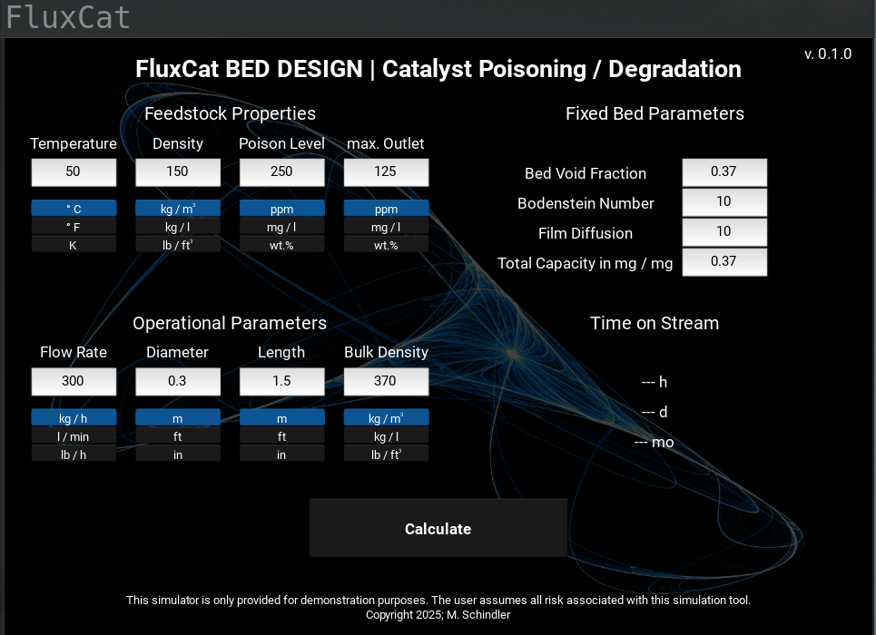

Quantitative Project Portfolio
Applied Causal Inference to cryptocurrency markets. Utilized Bayesian Networks, Directed Acyclic Graphs [DAGs], and Propensity Score Matching to differentiate true causal drivers from spurious correlations in volatile time-series data.

Framework for financial time-series analysis. Implemented Monte Carlo simulations for risk assessment and LSTM [Long Short-Term Memory] networks for trend prediction and volatility characterization.

A simulation engine for transient system behavior. Implemented a Finite-Volume solver to solve coupled non-linear PDEs, providing a computationally efficient robust alternative tool.

Developed a Python pipeline for Synthetic Data Generation. By simulating physical diffraction patterns, created large-scale labeled datasets to train Convolutional Neural Networks [CNNs] for automated phase quantification.